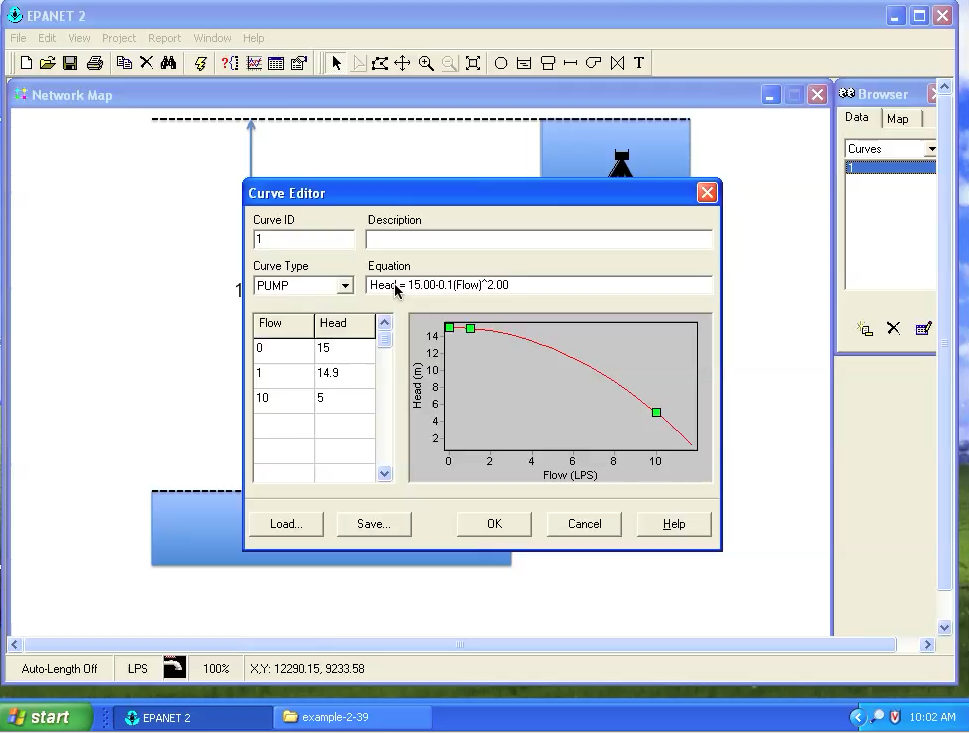

2.2 EPANET GUI Examples¶
Purpose¶
Present several examples using the GUI (freeswmm.ddns.net) to get users familiar with EPANET concepts
Examples¶
The examples below are copied from Cleveland, T.G., Tay, C.C., and Neale, C.M. (2015) EPANET by Example. Department of Civil and Environmental Engineering, Texas Tech University.
Example 1 - Head Loss in a Pipeline¶
A simple model to consider is a single pipe connecting two reservoirs.
A problem statement might be something like:
A 5-foot diameter, enamel coated, steel pipe carries 60oF water at a dis- charge of 295 cubic-feet per second (cfs). Using the Moody chart, estimate the head loss in a 10,000 foot length of this pipe.
Note
This example is verbatim from the references in the previous section, here the examples are presented using the freeswmm interface. Be aware that the files are pre-placed, so one could simply open and go without building a model.
In EPANET we will start the program, build a tank-pipe system and find the head loss in a 10,000 foot length of the pipe. The program will compute the friction factor for us (and we can check on the Moody chart if we wish).
The main trick in EPANET is going to be the friction coefficient, in the EPANET manual on page 30 and 31, the author indicates that the program expects a roughness coefficient based on the head loss equation. The units of the roughness coefficient for a steel pipe are \(0.15 \times 10^{-3}\) feet. On page 71 of the user manual the author states that roughness coefficients are in millifeet (millimeters) when the Darcy-Weisbach head loss model is used. So keeping that in mind we proceed with the example.
Figure xx is a screen capture of the EPANET program after connecting in freeswmm.
The program starts as a blank slate and we will select a reservoir and a node from the tool bar at the top and place these onto the design canvas.
Figure 37 is a screen capture of the EPANET program after setting defaults for the simulation.
Failure to set correct units for your problem are sometimes hard to detect (if the model runs), so best to make it a habit to set defaults for all new projects.
Next we add the reservoir and the node. Figure 41 is a screen capture after the reservoir and node are placed.
Note
The text tool was used to annotate the nodes - these are simply text blocks, and are not node labels, which is also a way to annotate.
We will specify a total head at the reservoir (value is unimportant as long as it is big enough to overcome the head loss and not result in a negative pressure at the node. We will specify the demand at the node equal to the desired flow in the pipe.
Next we will add the pipe. Figure 43 is a screen capture after the pipe is placed.
The sense of flow in this example is from reservoir to node, but if we had it backwards we could either accept a negative flow in the pipe, or right-click the pipe and reverse the start and end node connections.
Now we can go back to each hydraulic element in the model and edit the properties. We supply pipe properties (diameter, length, roughness height) as in Figure 45.

We supply the reservoir total head as in Figure 47.
We set the demand node elevation and the actual desired flow rate as in Figure 49.
The program is now ready to run, next step would be to save the input file.
Note
I will save an input file and a “network” file. The network file can be run using a command-line version or using the programmers toolkit. We will use this toolkit later on in the short course
Saving the network file
Now we can run the program by selecting the lightning bolt icon (or menu item “/Project/Run Analysis”).
Upon completion
Yay! A sucessful run, which means that the nodal connectivity is OK and there are no computed negative pressures. A successful run means the program found an answer to the problem you provided - whether it is the correct answer to your problem requires the engineer to interpret results and decide if they make sense.
The more common conceptualization errors are incorrect units and head loss equation for the supplied roughness values, missed connections, and forgetting demand somewhere. With practice these kind of errors are straightforward to detect. In the present example we select the pipe and the solution values are reported at the bottom of a dialog box.
Figure 54 is the result of turning on the computed head values at the node (and reservoir) and the flow value for the pipe in the Map tab of the browser tool.
The dialog box reports about 7.2 feet of head loss per 1000 feet of pipe for a total of 72 feet of head loss in the system. The total head at the demnad node is about 28 feet, so the head loss plus remaining head at the node is equal to the 100 feet of head at the reservoir, the anticipated result. The computed friction factor is 0.010, which we could check against the Moody chart if we wished to adjust the model to agree with some other known friction factor.
Example 2 Flow Rate in a Pipeline¶
This example represents the situation where the total head is known at two points on a pipeline, and one wishes to determine the flow rate (or specify a flow rate and solve for a pipe diameter). Like the prior example it is contrived, but follows the same general modeling process.
As in the prior example, we will use EPANET to solve a problem we have already solved by hand.
The problem statement is:
Using the Moody chart, and the energy equation, estimate the diameter of a cast-iron pipe needed to carry 60oF water at a discharge of 10 cubic- feet per second (cfs) between two reservoirs 2 miles apart. The elevation difference between the water surfaces in the two reservoirs is 20 feet. A sketch of the situation is
As in the prior example, we will need to specify the pipe roughness terms, then solve by trial-and-error for the diameter required to carry the water at the desired owrate. Page 31 of the EPANET manual suggests that the roughness height for cast iron is 0.85 millifeet.
As before the steps to model the situation are:
Start EPANET
Set defaults
Select the reservoir tool. Put two reservoirs on the map.
Select the node tool, put a node on the map. EPANET needs one node!
Select the link (pipe) tool, connect the two reservoirs to the node. One link is the 2 mile pipe, the other is a short large diameter pipe (negligible head loss).
Set the total head each reservoir.
Set the pipe length and roughness height in the 2 mile pipe.
Guess a diameter.
Save the input file.
Run the program. Query the pipe and find the computed flow. If the flow is too large reduce the pipe diameter, if too small increase the pipe diameter. Stop when within a few percent of the desired flow rate. Use commercially available diameters in the trial-and-error process, so exact match is not anticipated.
Figure 56 is a screen capture after the model is built and some trial-and-error diameter selection.
Of importance is the node and the “short pipe” that connects the second reservoir. By changing the diameter (inches) in the dialog box and re-running the program we can find a solution (diameter) that produces 10 cfs in the system for the given elevation differences.
Files¶
EX2.bmp The base image file
EX2-JB.net An EPANET input file (binary .net file, readable by the GUI)
EX2-JB.inp An EPANET network input file (ASCII .inp file, readable by the toolkit)
{kind=link}
Example 3 : Three-Reservoir-Problem¶
This example is a pretty classic hydraulics problem, that appears in some form in most if not all hydraulics textbooks. Here it is useful to introduce the concept of a basemap (image) to help draw the network.
First the problem statement:
Reservoirs A, B, and C are connected as shown. The water elevations in reservoirs A, B, and C are 100 m, 80 m, and 60 m. The three pipes connecting the reservoirs meet at junction J, with pipe AJ being 900 m long, BJ being 800 m long, and CJ being 700 m long. The diameters of all the pipes are 850 mm. If all the pipes are ductile iron, and the water temperature is 293\(^o\)K, find the direction and magnitude of flow in each pipe.

Here we will first convert the image into a bitmap (.bmp) file so EPANET can import the background image and we can use it to help draw the network. The remainder of the problem is reasonably simple and is an extension of the previous problem.
The steps to model the situation are:
Convert the image into a bitmap, place the bitmap into a directory where the model input file will be stored.
Start EPANET
Set defaults
Import the background.
Select the reservoir tool. Put three reservoirs on the map.
Select the node tool, put the node on the map.
Select the link (pipe) tool, connect the three reservoirs to the node.
Set the total head each reservoir.
Set the pipe length, roughness height, and diameter in each pipe.
Save the input file.
Run the program.
Below is the result of the above steps run on a laptop.

In this case the default units were changed to LPS (liters per second). The roughness height is about 0.26 millimeters (if converted from the 0.85 millifeet unit).
A you-tube video FREESWMM-EPANET-EX3 shows the example run on the (freeswmm.ddns.net) web interface. A screen capture of the result is below:
Note
The results should be identical. The video was not made at the same time as the screen capture, so there may be slight differences. The input files are pre-loaded onto the webserver implementation. In the face-to-face course, the actual modeling building process will be deomnstrated.
The requestite files are listed below.
{kind=link}
Example 4 - A simple looped network¶
Expanding the examples, we will next consider a looped network. As before we will use an exercise as the motivating example.
Problem Statement
The water-supply network shown in Figure 61 has constant-head elevated storage tanks at A and C, with inflow and outflow at B and D. The network is on flat terrain with node elevations all equal to 50 meters. If all pipes are ductile iron, compute the inflows/outflows to the storage tanks. Assume that flow in all pipes are fully turbulent.
As before we will follow the modeling protocol but add demand at the nodes. The steps to model the situation are:
Convert the image into a bitmap, place the bitmap into a directory where the model input file will be stored.
Start EPANET
Set defaults
Import the background.
Select the reservoir tool. Put two reservoirs on the map.
Select the node tool, put 4 nodes on the map.
Select the link (pipe) tool, connect the reservoirs to their nearest nodes. Connect the nodes to each other.
Set the total head each reservoir.
Set the pipe length, roughness height, and diameter in each pipe. The pipes that connect to the reservoirs should be set as short and large diameter, we want negligible head loss in these pipes so that the reservoir head represents the node heads at these locations.
Save the input file.
Run the program.
In this case the key issues are the units (liters per second) and roughness height (0.26 millimeters). Figure 62 is a screen capture of a completed model using a laptop computer (conventional application)
A you-tube video FREESWMM-EPANET-EX4 shows the example run on the (freeswmm.ddns.net) web interface. A screen capture of the result is below:
The results (laptop vs. freeswmm are functionally identical (as they should be!)
{kind=link}
Example 5 - Simulating a Pump¶
This example illustrates how to model a pump in EPANET. A pump is a special “link” in EPANET. This link causes a negative head loss (adds head) according to a pump curve.
Note
In addition to a pump curve there are three other ways to model added head | these are discussed in the user manual and are left for the reader to explore on their own.
Figure XX is a conceptual model of a pump lifting water through a 100 mm diameter, 100 meter long, ductile iron pipe from a lower elevation reservoir to an upper reservoir.
The suction side of the pump is a 100 mm diameter, 4-meter long ductile iron pipe. The difference in reservoir free-surface elevations is 10 meters.
The pump performance curve is given as $\(hp = 15.0-0.1Q^2 \)$ where the added head is in meters and the flow rate is in liters per second (lps). The analysis goal is to estimate the flow rate in the system.
To model this situation, the engineer follows the modeling protocol already outlined, only adding the special link.
Convert the image into a bitmap, place the bitmap into a directory where the model input file will be stored.
Start EPANET
Set defaults (hydraulics = D-W, units = LPS)
Import the background.
Select the reservoir tool. Put two reservoirs on the map.
Select the node tool, put 2 nodes on the map, these represent the suction and discharge side of the pump.
Select the link (pipe) tool, connect the reservoirs to their nearest nodes.
Select the pump tool.
Connect the nodes to each other using the pump link.
Set the total head each reservoir.
Set the pipe length, roughness height, and diameter in each pipe.
On the Data menu, select Curves. Here is where we create the pump curve. :::{note}This problem gives the curve as an equation, we will need three points to define the curve. Shutoff (Q = 0), and simple to compute points make the most sense.:::
Set the simulation duration to 1:00 hours (same as the hydraulic time step).
Save the input file.
Run the program. Again as
Figure XX is a screen capture of loading the background image.
After the image is loaded, we can then build the hydraulic model. The next step is to place the reservoirs.
Figure XX is a screen capture of the reservoirs after they have been placed.
The upper reservoir will be assigned a total head 10 meters larger than the lower reservoir - a reasonable conceptual model is to use the lower reservoir as the datum. Then we add the pipes (not shown) from lower reservoir to suction-side node and from the discharge node to the upper reservoir.
Next we add the actual pump; Figure XX is a screen capture of model just after the pump is added.
The next steps are to set the pipe lengths (not shown) and the reservoir elevations (not shown).
Finally, the engineer must specify the pump curve.
Figure XX is a screen capture of the pump curve data entry dialog box, accessed from the browser tool under the category “curves”.

Three points on the curve were selected and entered into the tabular entry area on the left of the dialog box, then the curve is created by the program. The equation created by the program is the same as that of the problem - hence we have the anticipated pump curve.
Note
The pump performance is supplied by the table entries, curves need not be simplistic 3-point representations; EPANET will interpolate during computation to stay on the curve (if possible); if departure is required a warning is issued by the program.
Next the engineer associates the pump curve with the pump as shown in Figure XX.
Warning
This step is crucial, until a curve is associated with a pump the program won’t run too well.
Upon completion of this step, the program is run to estimate the flow rate in the system.
A you-tube video FREESWMM-EPANET-EX5 shows the example run on the (freeswmm.ddns.net) web interface. A screen capture of the result is below:
The results (laptop vs. freeswmm are functionally identical (as they should be!)
Files¶
EX5.bmp The base image file
EX5-JB.net An EPANET input file (binary .net file, readable by the GUI)
EX5-JB.inp An EPANET input file (ASCII .inp file, readable by the GUI, CLI or the toolkit)
{kind=link}
Videos¶
FREESWMM-EPANET-EX2 ICT Summer School Live Demo of Example 1 and 2
FREESWMM-EPANET-EX3-INCLASS ICT Summer School Live Demo of 3-reservoir problem
FREESWMM-EPANET-EX4-INCLASS ICT Summer School Live Demo of small network
FREESWMM-EPANET-EX5-INCLASS ICT Summer School Live Demo of pump simulation